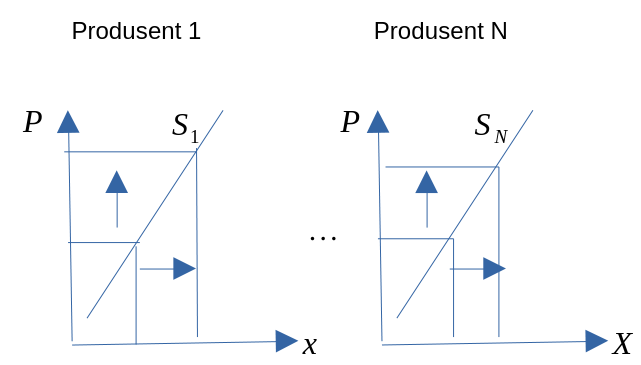
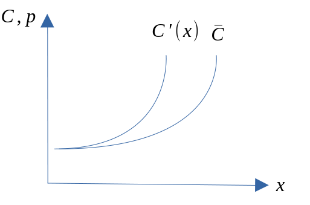
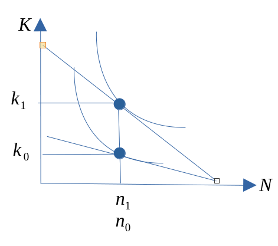

| Antall | Tema | Kapittel | Ansvarlig | Uke | Dato |
|---|---|---|---|---|---|
| 1 | Introduksjon til mikroøkonomi. Overblikk over fulllkomen konkurranse | Kap. 1-3 | JIH | 2 | 2024-01-10 |
| 2 | Produksjonsteori kort sikt: Teknologi, inntekter og kostnader, optimering i produkt- og arbeidsmarkedet | Kap. 4 | JIH | 3 | 2024-01-17 |
| 3 | Produksjonsteori kort og lang sikt: Teknologi, inntekter og kostnader, optimering i produkt- og arbeidsmarkedet | Kap. 5 | JIH | 4 | 2024-01-24 |
| 4 | Produksjonsteori kort og lang sikt: Teknologi, inntekter og kostnader, optimering i produkt- og arbeidsmarkedet | Kap. 6 | JIH | 5 | 2024-01-31 |
| 5 | Konsumentens valg | Kap. 7 | JIH | 6 | 2024-02-07 |
| 6 | Konsumentens økonomiske adferd i gode- og arbeidsmarkedet | Kap. 8 | JIH | 7 | 2024-02-14 |
| 7 | Fullkommen konkurranse | Kap. 9 | JIH | 9 | 2024-02-28 |
| 8 | Ufullkommen konkurranse: monopol | Kap. 10 | JIH | 10 | 2024-03-06 |
| 9 | Ufullkommen konkurranse: kartel, duopol, oligopol og monopolistisk konkurranse | Kap. 11 | JIH | 11 | 2024-03-13 |
| 10 | Ufullkommen konkurranse: Prisdiskriminering. Andre emner: Litt spillteori, markedet for arbeidskraft | Kap. 12, 15.2, 18 | JIH | 12 | 2024-03-20 |
| 11 | Effektivitet, velferd og markedsvikt | Kap. 13 | JIH | 14 | 2024-04-03 |
| 12 | Tilpasning over tid. Gjennomgang av arbeidskrav | Kap. 14 | JIH | 15 | 2024-04-10 |
| 13 | Nærmere om eksamen, repetisjon og gjennomgang av fjorårets eksamen | JIH | 16 | 2024-04-17 |
Alle
Praktisk informasjon
Timeplan
Anbefalte oppgaver
| Kapittel | Oppgavenummer |
|---|---|
| 1 | 1.1, 1.2, 1.3 1.5, 1.6, 1.9, 1.12, 1.14 |
| 3 | 3.2, 3.3, 3.5, 3.6, 3.7, 3.8 |
| 4 | 4.1, 4.2, 4.3, 4.4, 4.5, 4.6, 4.8 |
| 5 | 5.1, 5.2, 5.3, 5.4, 5.5, 5.6, 5.7, 5.8, 5.9, 5.10 |
| 6 | 6.2, 6.3, 6.4, 6.5, 6.6 |
| 7 | 7.1, 7.2, 7.3, 7.4, 7.5, 7.6, 7.7, 7.8 |
| 8 | 8.1, 8.2, 8.3, 8.4, 8.5, 8.6, 8.7 |
| 9 | 9.1, 9.2, 9.3, 9.4 |
| 10 | 10.1, 10.2, 10.3, 10.4 |
| 11 | 11.1 (d,feil i fasit på grafisk illustrasjon), 11.2, 11.3, 11.4 |
| 12 | 12.1, (12.2, om du har tid) |
| 13 | 13.1, 13.2, 13,3, 13.4, og 13.5 |
| 14 | 14.1, 14.2 |
| 15 | 15.1, 15.2 |
Pensumliste
Hovedbok

Oppgavebok

Kursgodkjennelse
Består av et obligatorisk arbeidskrav (som må være bestått) for å kunne gå opp til skriftlig eksamen.
Obligatorisk innleveringsoppgaver
Utlevert: 6.3.
Innleveringsfrist: 31.3.
Eksamen
Eksamen avholdes den 3.5.2024(?), 09:00, 4 timer.
Individuell, skriftlig firetimers eksamen.
Karakterregel: A-F.
Hjelpemidler: Godkjent kalkulator.
Kapittel 1: Introduksjon til mikroøkonomi. Overblikk over fulllkomen konkurranse
Hva handler økonomi om?
- Hva handler økonomi om?
- Mikroøkonomi er en del av samfunnsøkonomi. Hvilke temaer forbinder du med samfunnsøkonomi?
- En kort historie om en tur i butikken.
- Hvilke varer skal du kjøpe?
- Hvor mye skal du kjøpe av de ulike varene?
- Hva har økonomi med dette å gjøre? Tre relevante forhold:
- Varene må ha blitt produsert.
- Du må tilby noe for å bytte til deg varer. Betalingsmiddel
- og handel.
- Du må ha skaffet betalingsmiddelet.
Altså …
- Selv i den «enkle» historien er det:
- Flere beslutninger involvert.
- Flere markeder involvert.
- Men: hvorfor får vi ikke alle varer vi vil ha? Rundt oss ser vi (og opplever selv) stor etterspørsel.Vi trenger jo en rekke ting, også i Norge.
- Svaret er: KNAPPHET!
Definisjon
- Definisjon av økonomi:
Handler om bruken av knappe ressurser for å dekke menneskelig behov.
- Den delen av samfunnsvitenskapene som studerer de valgene som individer, bedrifter, myndigheter og samfunn må ta, som følge av knapphet.
- To stikkord: behov og ressurser. Komme tilbake til…
- Bedriftsøkonomi og samfunnsøkonomi: Hvorfor skal dere lære samfunnsøkonomi på dette studiet? Relevant for bedrifter?
Behov
- Økonomers behandling av behov og behovsdannelse. For enkelt? Psykologers behandling av samme tema…
- Et grovt skille:
- Som må dekkes
- Ønsker
- Behov avdekkes gjennom preferanser, som igjen kan avdekkes via etterspørsel.
- Kan behov skapes? Jepp. Men er slike skapte behov mer eller mindre viktig enn ”andre” behov, gitt knappe ressurser.
- En måte å skjære gjennom denne problemstillingen på er å legge til grunn konsumentsuverenitet.
- ”Folk vet best selv hva som er best for dem”.
Ressurser
- Innsatsfaktor eller produksjonsfaktor kan betegnes som synonyme ord.
\(\Rightarrow\) Faktorer som er ”input” i produksjonsprosessen. - Kategorier:
- Naturressurser: Fornybare og ikke-fornybare
- Arbeidskraft
- Realkapital: Kan brukes direkte eller indirekte
- Ressurser som er KNAPPE.
- Er penger ressurser??
Så kjernen i økonomifaget er dermed:
- Ettersom det er knapphet på ressurser kombinert med store behov, er det ønskelig å bruke ressursene smartest mulig.
\(\Rightarrow\) Sikre at utnyttelsen av ressursene er optimal. - Merk at ressurser ofte har alternativ anvendelse. Dette innebærer at dersom vi bruker en ressurs til å produsere en vare, kan ikke den samme ressursen brukes samtidig til å produsere en annen vare. Av og til ikke i det hele tatt.
Alternativkostnad
- Dette er et helt sentralt begrep i økonomifaget.
- Bruk av ressurser tilfører en verdi som skal dekke menneskelige behov.
- Ressurser har en alternativ anvendelse. Den beste alternative anvendelse har også en verdi. Denne verdien tapes når vi bruker ressursen til et bestemt formål.
- Dette tapet er alternativkostnaden.
- Alternativkostnaden er altså verdien av beste alternative anvendelse.
To sentrale spørsmål: spørsmål 1
- (1): Hvordan vil ulike valg bestemme hvilke goder som produseres, hvordan de produseres og for hvem?
- Goder skal dekke behov og ønsker.
- Men hva skal vi produsere og hvordan vet vi det?
- Hvor mye skal produseres?
- Hvordan? Vil ny teknologi erstatte arbeidskraft og føre til økt arbeidsledighet?
- Hvem skal det produseres til? Inntektsulikhet.
To sentrale spørsmål: spørsmål 2
- (2): Er det slik at valg som fremmer egeninteresse også fremmer samfunnets beste?
- Brukes de knappe ressursene på best mulig måte?
- Egeninteresse: valg som er best for en selv.
- Sosial interesse: valg som er best for samfunnet som helhet.
- Dine valg påvirker mange og valgene er knyttet sammen. Anta at alle valgene er gjort av egeninteresse, er det mulig at resultatet også er det beste for samfunnet som helhet?
- Adam Smith: JA. «Usynlige hånd».
Økonomisk tankemåte: metodologiske tradisjoner
- Økonomifaget defineres ut i fra tema som studeres, men det er en del metodiske tradisjoner.
- Et valg er en avveining (trade-off). Knapphet skaper valg.
- Kostnad: det du må gi opp.
- Fordel (benefit) eller nytte: Gleden du oppnår. Preferanser.
- Rasjonelle valg. Bruker all tilgjengelig informasjon, og veier så sammen kostnader og fordeler.
- Valg på marginen. Ikke enten-eller, men hvor mye. Marginalkostnad og marginalfordel.
- Valg responderer på incentiver. Incentiv: Belønning eller straff som følge av valg.
Økonomi som vitenskap
Modeller
- Bruker økonomiske modeller.
- Hva er en modell? En forenklet beskrivelse av virkeligheten. Bygger pr. definisjon på forutsetninger.
- Hvorfor bruke modeller? For å kunne fokusere på ett eller noen aspekter av virkeligheten. Virkeligheten er komplisert…
- Modeller gjør at vi kan rense vekk momenter som vi tror ikke har noen spesiell innvirkning på vårt spørsmål.
Skillet mellom mikroøkonomi og makroøkonomi
- Det finnes flere måter å strukturere økonomifaget på. Disiplinen består av en rekke underområder.
- Mikroøkonomi: Søker å forklare aktørers beslutninger, tilpasning og interaksjon.
- Aktører: Bedrifter, konsumenter, markeder.
- Makroøkonomi: Søker å studere og forklare aggregerte størrelser. Økonomien under ett.
- Makroøkonomi kan deles inn i konjunkturteori og økonomisk vekst.
- Mikroøkonomi: Søker å forklare aktørers beslutninger, tilpasning og interaksjon.
Kapittel 3: En markedsmodell med fullkommen konkurranse
Innledning
- Bytteøkonomi og markedsøkonomi: I en markedsøkonomi (pengeøkonomi) byttes varer indirekte.
- Et marked består av en tilbudsside og en etterspørselsside.
- Vi skal nå se på den enkleste markedsformen i økonomisk teori: Markedsmodell med fullkommen konkurranse
- Markedsformen er likevel nyttig:
- Selvstendig analyseapparat.
- Kan utvides langs mange dimensjoner.
- Er samfunnsøkonomisk effektiv (hva som menes med dette skal vi bruke litt tid på nå, men mere tid på senere).
- Er en referansemodell som andre modeller og resultater kan sammenlignes mot.
Bakgrunn
- Store deler av kurset vil handle om teorien bak denne modellen. MERK at oppbyggingen gir oss flere selvstendige modeller som er nyttige for økonomiske analyser.
- Modellen går langt tilbake:
- Adam Smith (1723-1790) \(\rightarrow\)
- Nyklassikerne og John Stuart Mill (1806-1873) \(\rightarrow\)
- Alfred Marshall (1842-1924) \(\rightarrow\)
- Paul Samuelson (1915-2009) mfl.
- Vi skal komme tilbake til forutsetningene bak denne modellen i kapittel 9.
- Men merk spesielt: Aktørene er pristakere og har ingen innflytelse på pris som enkeltaktør, men summen av aktørenes adferd bestemmer markedsprisen.
Markedsetterspørsel
- Etterspørsel etter varer og tjenester. Ofte kalles varer + tjenester for goder.
- Hva bestemmer etterspørselen? Priser, inntekt med mer.
- Etterspørselsloven:
- Økt pris \(\rightarrow\) lavere etterspørsel, alt annet konstant (cet.par.).
- Flere forhold holdes her konstante. Vi ser kun på endringer i prisen på varen. En endring i denne vil flytte oss langs kurven.
- En endring i konstantene vil føre til skift i kurven.
- Fra et individs etterspørsel til markedsetterspørsel.

Markedstilbud
- Tilbud av varer og tjenester. Tilbudet utgjøres av bedriftene eller produsentene. Tilbudet er altså produksjonen.
- Hva bestemmer tilbudet? Pris på ferdigvare og innsatsfaktorer.
- Tilbudsloven:
- Økt pris \(\rightarrow\) økt tilbud, cet.par. Kurve.
- Endringer i prisen på varen fører til bevegelse langs kurven.
- En endring i konstantene fører til skift i kurven.
- Fra en bedrifts tilbud til markedstilbud.

Markedslikevekt
- Utgangspunkt: markedets E-kurve og T-kurve.
- Likevekt: dersom ingen aktører ønsker å endre den eksisterende økonomiske tilpasning.
- \(X^S = X^D\)

- Anta at prisen er lavere enn likevektspris (makspris).
- Overskuddsetterspørsel: \(X^D > X^S\)
- Anta at prisen er over likevektsprisen (minpris).
- Overskuddstilbud: \(X^S > X^D\)
- Merk: Ingenting i modellen som tilsier stabilitet. Men utenfor modellen kan vi resonnere markedskreftene alltid bringer oss tilbake til likevekt, slik det er beskrevet av Adam Smith.
Konsument- produsent og sammfunnsøkonomisk overskudd
- I samfunnsøkonomi er vi naturlig nok opptatt av å vurdere om et marked eller et prosjekt eller politikkforslag er samfunnsøkonomisk lønnsomt. Når alt kommer til alt er det jo høyest mulig velferd for individene i samfunnet som er målet.
- For å vurdere velferden brukes begrepet samfunnsøkonomisk overskudd (SO).
- Dette består av konsumentoverskudd (KO) og produsentoverskudd (PO)
- Vi har derfor at SO er gitt ved: \[\begin{equation*} SO=PO+KO \end{equation*}\]
Konsumentoverskudd
- Hvor mye du er villig til å betale for kalles Betalingsvillighet.
- Betalingsvilligheten avhenger av hvor mye du har i utgangspunktet: \(\Rightarrow B(X)\)
- Det et imidlertid forskjell på det konsumenten er villig til å betale, og det han faktisk betaler. Det er denne differensen som er konsumentoverskuddet:
- \(\Rightarrow KO(X) = B(X) – PX\)
Produsentoverskudd
- Produsentoverskudd defineres som summen av den ekstrainntekten som produsenten får, av å selge til en pris som er høyere enn den laveste de ville vært villige til å akseptere.
- Det vil si: differensen mellom produsentens samlede salgsinntekter og variable kostnader.
- \(\Rightarrow PO(X) = PX-CV(x)\)

Samfunnsøkonomisk overskudd og fullkommen konkurranse
Maksimalt SO finner vi ved \[\begin{equation*} \underset{X}{\text{Maks}SO}=PO+KO=(PX-CV(X))+(B(X)-PX) \end{equation*}\]
Er løsningen til dette problemet tilfredsstilt i en markedsmodell med fullkommen konkurranse? JA (vi vil se nærmere på løsningen senere i dette kurset)!
Komparativ statikk/ skift i kurvene
- Vi vet at tilbuds- og etterspørselskurvene er konstruert under en antagelse om at flere forhold antas konstante. Dersom det skjer endringer i noen av disse forholdene, vil kurvene forskyves i diagrammet. La oss se på noen av disse forholdene.
Tilbudskurven
- Ble tegnet for:
- gitt teknologi for bedriften,
- gitte priser på innsatsfaktorene.
Etterspørselskurven
- Ble tegnet for:
- en gitt behovsstruktur for konsumenten,
- gitt samlet inntekt for konsumenten,
- gitt inntektsfordeling,
- gitte priser på andre goder.
Helningens betydning
- Helningen på tilbuds- og etterspørselskurven påvirker hvordan endringer i markedet påvirker pris og mengde. La oss se på et eksempel der lavere pris på innsatsfaktorene har ført til et positivt skift i tilbudskurven.
Skiftanalyse (bratt/prisufølsom/prisuelastisk etterspørselskurve) ::: {.cell} ::: {.cell-output-display} 
:::
Skiftanalyse (slak/prisfølsom etterspørselskurve) ::: {.cell} ::: {.cell-output-display}
::: :::
::::
Effekten av en avgift
En avgift kan ha flere hensikter, men spesielt er to ting viktig:
- Inntekt for staten
- Endrer markedsresultatet. Aktuelt ved behov for korrigering av nåværende situasjon (tilpasning).
Avgiften kan pålegges kjøperne og selgerne.
Anta nå at avgiften \(\tau\) blir pålagt selgerne
- Dersom avgiften pålegges produsentene, vil kostnadene til bedriften stige. Dette skifter isolert sett tilbudskurven innover. Den vertikale størrelsen på skiftet er lik avgiften \(\tau\). Resultater:
- Staten får inn \(\tau\) kr. pr. enhet.
- Konsumenten betaler: \(P^K\)
- Produsenten mottar: \(P^P\) Produsenten ”sender” nå avgiften til staten, men begge bærer byrden!!

Maksimal- og minsteprisen
Maksimalpris har vi dersom markedsprisen blir overtyrt ved at myndighetene setter et makspris som er lavere enn markedsprisen.
::: {.cell} ::: {.cell-output-display} 
:::
Minstrepris har vi dersom markedsprisen blir overtyrt ved at myndighetene setter et minstepris som er høyere enn markedsprisen. ::: {.cell} ::: {.cell-output-display} 
::: :::
::::
Produksjonsmulighetskurven (PMK)
- Produksjonsmulighetskurven (PMK)
- PMK: kurven kan brukes til å illustrere hvordan produksjonsmulighetene er begrenset. Dette fører til et ressursallokeringsproblem. Videre skal vi illustrere forskjellen på kort og lang sikt.
- Kurven bygger på en antagelse om at alternativkostnadene øker ved stadige overføringer av ressurser mellom sektorer.
- Forutsetninger: to produkter, gitt mengde produksjonsfaktorer (kort sikt) og produksjonsteknologien er konstant.

Kapittel 4, 5 og 6: Innledning til produsentteorien
Produsentens rolle, teknologiske forhold og produksjon
Produsentene eller bedriftene er en av hovedaktørene i en økonomi.
Produsentens rolle: tilby de varer og tjenester som etterspørres i et samfunn. Basert på konsumentens ønsker må produsenten vite hva som skal produseres, mengde og lokalisering.
Teknologisk perspektiv: Produsenten bruker innsatsfaktorer til å omforme råvarer til ferdige produkter.
Vi forenkler produksjonsbildet ved å anta at produsenten bruker to innsatsfaktorer, \(N\) og \(K\), til å produsere ett produkt, \(x\). \(N\) er arbeidskraft og \(K\) er realkapital.
Bedriften må altså velge effektiv produksjonsprosess.
Økonomisk perspektiv: Her består valget i å velge hvor mye bedriften skal produsere og tilby av produktet.
For å kunne få størst mulig overskudd må vi kjenne til inntekter og kostnader. Kostnadene er igjen svært avhengig av det teknologiske valget.
Vi må derfor sammenkoble elementer fra begge disse perspektivene.
Vi tar utgangspunkt i produksjonsbildet med to innsatsfaktorer og ett produkt.
- Produktfunksjonen:
- \(x = f(N, K)\)
- Viser, for enhver mulig faktorkombinasjon, det maksimale antall enheter som kan produseres av produktet.
- \(f\) beskriver formen på avhengighetsforholdet mellom produksjonsmengden og innsatsfaktorene. Kan tolkes som forhold (faktorer) som endrer produksjonsmengden uten å endre mengden av innsatsfaktorene \(N\) og \(K\).
- Produktfunksjonen:
Merk: Til forskjell fra læreboka, vil vi forelesningene først gjennomgå alle deler av produksjonsteorien på kort sikt, før vi ser på dette på lang sikt.
| Pensumbok | Kort sikt | Lang sikt |
|---|---|---|
| Teknologi/Produksjon | Kap. 4 | Kap 4 |
| Inntekter og kostnader | Kap. 5 | Kap 5 |
| Optimering i produkt og faktormarkedene | Kap. 6 | Kap. 6 |
Kapittel 4, 5 og 6: Produksjonsteori på kort sikt
Produksjon og teknologiske forhold
Talleksempel på en produktfunksjon ::: {.cell} ::: {.cell-output-display}
| Arbeidskraft (N) | Kapital (K) | Produksjon | Grenseprodukt. | Gjennomsnittsprod. |
|---|---|---|---|---|
| 1 | 20 | 10 | NA | 10 |
| 2 | 20 | 24 | 14 | 12 |
| 3 | 20 | 39 | 15 | 13 |
| 4 | 20 | 52 | 17 | 13 |
| 5 | 20 | 61 | 9 | 12 |
| 6 | 20 | 66 | 5 | 11 |
| 7 | 20 | 66 | 0 | 9 |
| 8 | 20 | 64 | -2 | 8 |
| 9 | 20 | 56 | -8 | 6 |
| 10 | 20 | 44 | -12 | 4 |
::: :::
Forutsetninger om produktfunksjonen
- For analytiske formål antas funksjonen kontinuerlig og to ganger deriverbar:
Arbeidskraft

- \(\frac{\partial f}{\partial N} > 0\)
- \(\frac{\partial^2 f}{\partial N^2} < 0\)
- Positive, men avtagende grenseproduktiviteter.
- De førsteordens partielle deriverte uttrykker grenseproduktiviteten: hvor mye produsert kvantum endres ved en liten endring i bruken av vedkommende innsatsfaktor.
- Loven om avtakende utbytte gjelder altså her.
Inntekter og kostnader
Inntekter
- Bedriftens inntekter bestemmes av antall enheter den selger, og prisen på disse enhetene.
- Pris: \(p\). Mengde: \(x\).
- Inntekt: \(R=px\). Stigende i et \((x,R)\)-diagram
- Grenseinntekt: endring i inntekt ved en marginal endring i solgt kvantum: \(R'(x)\)
- Gjennomsnitsinntekt: inntekt per produsert enhet: \(\overline{R}\).
Talleksempel for salgsinntekter
| Solge enheter | Pris per enhet | Salgsinntekt | Grenseinntekt | Gjennomsnittsinntekt |
|---|---|---|---|---|
| 1 | 1000 | 1000 | 1000 | |
| 2 | 1000 | 2000 | 1000 | 1000 |
| 3 | 1000 | 3000 | 1000 | 1000 |

Kostnader
- Kostnader: De beløp som påløper som følge av virksomhet.
- Faste kostnader \((C_F)\) : Kostnader som er uavhengige av produsert kvantum.
- Variable kostnader \((C_V\)): Varierer i takt med produsert kvantum - \(C_V = C_{V}(x)\)
- Totale kostnader \((C)\): Summen av faste og variable kostnader - \(C = C_F + C_V\)
- Gjennomsnittskostnader (enhetskostnader): Disse finner vi ved å dividere de respektive kostnadene med antall produserte enheter. - \(\overline{C}=\frac{C_F}{x}+\frac{C_V}{x}=\overline{C}_F+\overline{C}_V\)
- Grensekostnader ( \(GK\) eller \(C'\) ): Endringen i bedriftens totale kostnader ved en liten endring i produsert kvantum - \(GK=\frac{dC(x)}{dx}=C'(x)\)
Sammenhengen mellom gjennomsnittskostnad og grensekostnad
Talleksempel a): med avtagende marginalproduktivitet (mest relevant for dette kurset) og uten faste kostnader
| Produserte enheter | Lønnskostnader | Antall arbeidere | Variable kostnader |
|---|---|---|---|
| 1 | 1000 | 1 | 1000 |
| 2 | 1000 | 2 | 2000 |
| 3 | 1000 | 3.1 | 3100 |
::: {.cell} ::: {.cell-output-display}
| Faste kostnader | Totale kostnader | Grensekostnader | Gjennomsnittskostnad |
|---|---|---|---|
| 0 | 1000 | ||
| 0 | 2000 | 1000 | 1000 |
| 0 | 3100 | 1100 | 1032 |
::: :::
Talleksempel b): med økende marginalproduktivitet (mindre relevant) og uten faste kostnader
| Produserte enheter | Lønnskostnader | Antall arbeidere | Variable kostnader |
|---|---|---|---|
| 1 | 1000 | 1 | 1000 |
| 2 | 1000 | 2 | 2000 |
| 3 | 1000 | 2.9 | 2900 |
::: {.cell} ::: {.cell-output-display}
| Faste kostnader | Totale kostnader | Grensekostnader | Gjennomsnittskostnad |
|---|---|---|---|
| 0 | 1000 | ||
| 0 | 2000 | 1000 | 1000 |
| 0 | 2900 | 900 | 966 |
::: :::
Talleksempel c): med avtagende marginalproduktivitet og med faste kostnader
| Produserte enheter | Lønnskostnader | Antall arbeidere | Variable kostnader |
|---|---|---|---|
| 1 | 1000 | 1 | 1000 |
| 2 | 1000 | 2 | 2000 |
| 3 | 1000 | 3.1 | 3100 |
| Faste kostnader | Totale kostnader | Grensekostnader | Gjennomsnittskostnad |
|---|---|---|---|
| 2000 | 3000 | 3000 | |
| 2000 | 4000 | 1000 | 2000 |
| 2000 | 5100 | 1100 | 1700 |
Grensekostnad og gjennomsnittskostnad uten faste kostnader

Grensekostnad og gjennomsnittskostnad med faste kostnader

Tilpasningen i gode og faktormarkedet
- Vi skal nå legge til grunn at bedriften har som mål å maksimere fortjenesten eller profitten.
- Vi skal også legge til grunn av bedriften betrakter alle priser som gitte (gode- og faktorpriser).
- Bedriften tilpasser seg på to markeder:
- godemarkedet
- faktormarkedet: arbeidsmarkedet
- I faktormarkedet kjøper bedriften innsatsfaktorer og må velge de kvantum av faktorene som maksimerer fortjenesten.
- I godemarkedet må bedriften velge den produksjonsmengden som maksimerer fortjenesten. Altså: to valg!
Hvor stor skal produksjonen være og bedriftens tilbud av produktet
- For å finne svar på dette, lar vi produksjonsmengden være variabel.
- Hensikten med denne tilnærmingen er å analysere hvordan bedriften varierer produsert kvantum/ antall enheter den produserer, for å oppnå høyest mulig fortjeneste.
- Produsentens valgvariabel er dermed kvantumet \(x\).
- En fordel med denne tilnærmingen er at den gir sammenhengen mellom pris og produsert kvantum på en enkel måte. Dette kan så brukes til å utlede bedriftens tilbudskurve, og i neste omgang markedets tilbudskurve.
Fortjenestemaksimering (kort sikt) med variabel produksjonsmengde
- Produksjon: \(x = f(N)\)
- Kostnader: \(C(x) = C_V(x) + C_F\)
- Salgsinntekt: \(R = px\)
- Maks profitt: \(F = R – C\) som gir \(F=px – C_V(x) – C_F\)
Bedriften ønsker å maksimere dette uttrykket mhp. bruken av arbeidskraften. Formelt kan vi uttrykke dette som: \[ \underset{x}{\text{Maks }} F=px-C(x) \]
Løsning og tolkning
1.ordensbetingelsen er gitt ved \[ p = C'(x) \] Produksjonen tilpasser seg der hvor produktprisen er lik grensekostnaden.
2.ordensbetingelsen (som sikrer maksimum) \[ F''(x)=-C''(x) < 0 \Leftrightarrow C''(x) > 0 \]
Kostnadsfunksjonen må være konveks (som vi tidligere har sett at kan komme som et resultat av avtagende grenseproduktivitet mhp. bruken av arbeidskraft)
Uten faste kostnader ::: {.cell} ::: {.cell-output-display} 
:::
Med faste kostnader ::: {.cell} ::: {.cell-output-display} 
::: :::
::::
- Tilbudet til bedriften må bestemmes gjennom profittmaksimering eller kostnadsminimering.
- Ettersom dette krever at bedriften er på grensekostnadskurven, vil tilbudskurven være ”den samme” som grensekostnadskurven.
- På kort vil bedriftens tilbud være stigende i et (x,p)-diagram.
- Reservasjonsprisen (minsteprisen) vil være der hvor \(p_r=\overline{C}\)
- Dersom de faste kostnadene er irrreversible (har en alternativ anvendelse), vil \(\overline{C}=\overline{C}_V\)
- Dersom de faste kostnadene er reversible (har en alternativ anvendelse), vil \(\overline{C}=\overline{C}_V+\overline{C}_F\)
Øvelse om produksjonen
Anta at produktprisen er gitt ved 100 og kostnadsfunksjonen som \(C(x)=x^2\). Hva blir den optimale produksjon?
Løsning
Uttrykket for fortjeneste kan formuleres som \[ F=100\cdot x - x^2 \]
Vi ønsker å finne maksimal produksjon. Førsteordensbetingelsen vil hær være gitt ved \[\begin{equation*} F'(x)=100-2x=0 \\ 2x=100 \\ x=100/2=50 \end{equation*}\]
Andreordensbetingelsen for maksimum er oppfylt siden \[ F''(x)=-2<0 \]
Ved å sette \(x=50\) tilbake i uttrykket for profitt finner vi at profitten er positiv og gitt ved \[ F=100\cdot 50 - 50^2=2500 \]
Hvor stor skal etterspørselen etter arbeidskraft være?
- For å finne svar på dette spørsmålet betrakter vi innsatsfaktoren arbeidskraft som variable, og at disse utgjør beslutningsvariablene til bedriften.
- Bedriften ønsker størst mulig overskudd.
- Produksjon: \(x = f(N)\)
- Kostnader: \(C = wN\)
- Salgsinntekt: \(R = px\)
- Profitten er gitt som inntekter (R) minus kostnader (C): \(F = R – C\)
Bedriften ønsker å maksimere dette uttrykket mhp. bruken av arbeidskraften. Formelt kan vi uttrykke dette som: \[ \underset{N}{\text{Maks }} F=pf(N)-wN \]
Løsning og tolkning
1.ordensbetingelsen er gitt ved \[ pf'(N)=W \] Bruken av arbeidskraften bestemmes der hvor verdien av grenseproduktiviteten er lik det nominelle lønnsnivået.

2.ordensbetingelsen (som sikrer optimum) \[ pf''(N) < 0 \]
Øvelse om bruk av arbeidskraft
Anta at produktprisen er gitt ved 10, lønnskostnadene gitt ved 1, og produktfunsjonen \(x=\sqrt{N}\) Hva blir den optimale bruken av arbeidskraft?
Løsning
Uttrykket for fortjeneste kan formuleres som \[ F=10N^{0.5}-N \]
Vi ønsker å finne maksimal bruk av arbeidskraft. Førsteordensbetingelsen vil være gitt ved
\[\begin{equation*} F=1/2\cdot 10N^{0.5-1}-1=0 \\ 5\cdot N^{(-0.5)}=1 \\ N^{-0.5}=1/5 \\ N^{0.5}=5 \\ N=5^2 = 25 \end{equation*}\]
2.ordensbetingelsen (som sikrer optimum) \(-2.5\cdot N^{-1.5} < 0\), mens optimal forjeneste er positiv og gitt som \(F=10\cdot 25^{1/2}-25=25\)
Kapittel 4, 5 og 6: Produksjonsteori på lang sikt
Produksjon og teknologiske forhold
- Vi tar utgangspunkt i produksjonsbildet med to innsatsfaktorer og ett produkt.
- Produktfunksjonen:
- \(x = f(N, K)\)
- Viser, for enhver mulig faktorkombinasjon, det maksimale antall enheter som kan produseres av produktet.
- \(f\) beskriver formen på avhengighetsforholdet mellom produksjonsmengden og innsatsfaktorene. Kan tolkes som forhold (faktorer) som endrer produksjonsmengden uten å endre mengden av innsatsfaktorene \(N\) og \(K\).
Arbeidskraft ::: {.cell} ::: {.cell-output-display}
- \(\frac{\partial f}{\partial N} > 0\)
- \(\frac{\partial^2 f}{\partial N^2} < 0\) :::
Kapital ::: {.cell} ::: {.cell-output-display} 
::: - \(\frac{\partial f}{\partial K} > 0\) - \(\frac{\partial^2 f}{\partial K^2} < 0\) ::: ::::
Isokvanter og MTSB for produksjon
- For å representere produktfunksjonen grafisk, skal vi bruke et redskap fra matteboka, nemlig nivåkurver.
- Nivåkurven kalles her en isokvant: viser alle kombinasjoner av N og K som gir samme produserte kvantum.
- Isokvantens form bygger på følgende prinsipp: jo mer bedriften har av en innsatsfaktor, jo mer kan den bytte for én ekstra enhet av den andre faktoren, gitt at produksjonsmengden skal være den samme.
- MTSB (marginale tekniske substiusjonsbrøk) beskriver helningen på en isokvant for en gitt faktorkombinasjon, dvs. i ett punkt på isokvanten.
- Merk: MTSB er gitt ved forholdet mellom grenseproduktivitetene (se appendiks for formell utledning) \[\begin{equation*} MTSB \equiv -\frac{\Delta K}{\Delta N} = \frac{f'_{N}(K,N)}{f'_{K}(K,N)}>0 \end{equation*}\]
- Formell utledning er vist i appendiks
Eksempel 4.2 fra pensumbok
Anta at produktfunksjonen er gitt ved: \(x = N^{0,7}+K^{0,3}\) Regn ut MTSB for denne produktfunksjonen.
Grenseproduktiviteten til arbeidskraften er gitt ved \[ \frac{\partial x}{\partial N} = 0,7N^{0,7-1} = 0,7N^{-0,3} \]
Grenseproduktiviteten til kapitalen er gitt ved \[ \frac{\partial x}{\partial K} = 0,3K^{0,3-1} = 0,3K^{-0,7} \]
MTSB blir derfor \[ MTSB \equiv - \frac{\Delta K}{\Delta N} = \frac{\frac{\partial x}{\partial N}}{\frac{\partial x}{\partial K}} = \frac{0,7N^{-0,3}}{0,3K^{-0,7}} \]
Substitusjonsegenskaper
- Dette sier noe om hvor lett det er å erstatte innsatsfaktorer med hverandre.
- For eksempel: I noen bransjer er det lettere å erstatte arbeidskraft med kapital enn i andre.
- Dette kan fremstilles med formen på isokvanten.
- Ytterkantene: perfekt substitusjon og ingen substitusjon (perfekte komplementer).
Lineær produksjonsteknologi (perfekte substitutter) ::: {.cell} ::: {.cell-output-display} 
:::
Leontief produksjonsteknologi (ingen substitusjon) ::: {.cell} ::: {.cell-output-display} 
::: :::
::::
Skalaegenskaper
- Mens grenseprodukt viser endring i bruken av én innsatsfaktor, viser skalaendringer endringer i bruken av alle innsatsfaktorer.
- Definisjon: Skalaegenskapene sier noe om hvor mye produksjonsmengden endres ved proporsjonale endringer i bruken av innsatsfaktorene.
- Proporsjonale endringer innebærer at forholdet mellom N og K er konstant.
- Anta en proporsjonal økning på 100%.
- Hva skjer med produksjonsmengden (merk: produksjonsprosesser kan variere i skala)?
- Konstant skalautbytte
- Skalaøkning på y % \(\Rightarrow\) økning i produsert kvantum på y %.

- Avtagende skalautbytte
- Skalaøkning på y % \(\Rightarrow\) økning i produsert kvantum på mindre enn y %.
- Økende skalautbytte
- Skalaøkning på y % \(\Rightarrow\) økning i produsert kvantum på mer enn y %.

Inntekter og kostnader
Inntekter
- Sammenlignet med den beskrivelsen som ble gitt for kort sikt, forekommer det her ingen endringer.
Kostnader
- Sammenlignet med den beskrivelsen som ble gitt for kort sikt, kan vi her se bort fra de faste kostnadene siden vi antar alle innsatsfaktorer for å være variable på lang sikt.
Kostnadslinjen og isokostlinja
- Totale kostnader for bedriften er summen av variable og faste kostnader. La oss nå se bort fra de faste, dette siden vi antar alle faktorer antas å være variable på lang sikt.
- Vi antar at bedriftens kostnader kan uttrykkes ved summen av utgiftene på de to innsatsfaktorene.
- Pris på N: w
- Pris på K: r
- \(C = wN + rK\) Totale kostnader (C) er da gitt ved: \[ C = wN + rK \]
- Isokost (låser totalkostnadene til et bestemt nivå) \(C^o=C\) \[
C^o= wN + rK
\]
- Helningen på isokostlinja \[\begin{equation} \Delta C^0= w\Delta N + r\Delta K = 0 \\ r\Delta K = -w\Delta N \\ \frac{\Delta K}{\Delta N} = - \frac{w}{r} \end{equation}\]
- Bruker hele budsjettet på arbeidskraft \(\Rightarrow K=0\) \[\begin{equation} C^0= wN + r0 = wN \\ C^0/w = N \\ N = C^0/w \end{equation}\]
- Bruke hele budsjettet (kostnaden) på kapital \(\Rightarrow N=0\) \[\begin{equation} C^0= w0 + rK = wN \\ C^0/r = K \\ K = C^0/r \end{equation}\]
Maksimering av produksjonen for en gitt kostnadsramme (optimal tilpasning)
- Målsetting er her å maksimere produsert kvantum innenfor en gitt kostnadsramme.
- Dette kan være typisk for en bedrift i offentlig sektor, der de økonomiske rammebetingelsene utgjøres av en gitt kostnadsramme eller et gitt budsjett som er blitt tildelt over de offentlige budsjetter.
- Tar utgangspunkt i produktfunksjonen:
- \(x = f(N, K)\)
- Helningen er gitt ved MTSB.
- Tar så utgangspunkt i kostnadslinja:
- \(C = wN + rK\)
- Kombinerer disse for å finne optimal tilpasning.
Max \(x=f(K,N)\) gitt \(C^0=wN +rK\) gitt (beskrankning)
Dette problemet kan løses ved bruk av Lagrange-metode (se appendiks for formell utledning), hvor løsningen er gitt ved:
\[\begin{equation} MTSB \equiv \frac{f'_{N}}{f'_{K}} = \frac{w}{r} \\ C^0=wN +rK \end{equation}\]
Optimal løsning er her karakterisert ved tangeringspunktet mellom isokvant og isokostlinjen.

Substitumalen: økonomisk substitusjon
Dersom vi tenker oss flere endringer i bedriftens kostnadsramme med tilhørende optimale isokvant, vil vi få frem en rekke tangeringspunkter. ::: {.cell} ::: {.cell-output-display}
 ::: :::
::: :::Kurven gjennom alle disse punktene kalles ekspansjonsveien eller substitumalen.
På ethvert punkt på denne kurven kan det leses av produksjonsmengde, tilhørende kostnader og etterspørsel etter innsatsfaktorer.
Alle punktene på substitumalen viser tilpasninger der det ikke er mulig å øke produktmengden, uten at kostnadene øker. Det er heller ikke mulig å redusere kostnadene, uten samtidig å redusere produsert kvantum.
Dersom bedriften er utenfor substitumalen kan den alltid bedre sin situasjon ved økonomisk substitusjon.
Tilpasningen i gode og faktormarkedet
Hvor stor skal produksjonen være og bedriftens tilbud av produktet
- Tilbudet til bedriften må bestemmes gjennom profittmaksimering eller kostnadsminimering.
- Ettersom dette krever at bedriften er på grensekostnadskurven, vil tilbudskurven være ”den samme” som grensekostnadskurven.
- På lang sikt vil bedriftens tilbudskurve enten være
- Stigende (ved avtagende skalautbytte) i et (x,p)-diagram
- Horisontal (ved konstant skalautbytte) i et (x,p)-diagram
- Avtagende (ved økende skalautbytte) i et (x,p)-diagram

Hvor stor skal etterspørselen etter arbeidskraft og kapital være?
Redusert pris på kapital

Redusert pris på arbeidskraft
Generelt resultat: Etterspør mer (mindre) av den innsatsfaktoren som har blitt billigere (dyrere), og den kvantative effekten her er sterkere på langt sikt enn på kort sikt pga. substitusjonsegenskapene mellom arbeidskraft og kapital.
Appendiks
MTSB: Formell utledning
Formell utledning av MTSB. Ta utgangspunkt i produktfunksjonen og total differensier.
\[ \overline{x} = f(K,N) \]
Dersom vi totaldifferensierer dette uttrykket får vi
\[\begin{equation*} \Delta \overline{x} = f'_{K}(K,N)\Delta K + f'_{N}(K,N)\Delta N = 0 \end{equation*}\]
Uttrykket ovenfor kan skrives som
\[\begin{equation*} f'_{K}(K,N)\Delta K =- f'_{N}(K,N)\Delta N \\ \frac{\Delta K}{\Delta N} = - \frac{f'_{N}(K,N)}{f'_{K}(K,N)} \end{equation*}\]
\[\begin{equation*} MTSB \equiv -\frac{\Delta K}{\Delta N} = \frac{f'_{N}(K,N)}{f'_{K}(K,N)}>0 \end{equation*}\]
Merk: MTSB er gitt ved forholdet mellom grenseproduktivitetene.
Lagrange: Produktmaksimering for en gitt kostnadsramme
Maks \(x=f(K,N)\) gitt \(C^0=wN +rK\) gitt (beskrankning). Lagrange metode: \[\begin{equation} L = f(K,N) - \lambda(wN+rK-C^0) \end{equation}\] Første ordens betingelsen er gitt ved \[\begin{equation} \partial L/\partial N = f'_{N} - \lambda w =0 \\ \partial L/\partial K = f'_{K} - \lambda r =0 \\ C^0=wN +rK \end{equation}\]
Kombinerer de to første ordens betingelsene gir oss to likninger for å løse de to ukjente N,K \[\begin{equation} MTSB \equiv \frac{f'_{N}}{f'_{K}} = \frac{w}{r} \\ C^0=wN +rK \end{equation}\] Optimal løsning er her karakterisert ved tangeringspunktet mellom isokvant og isokostlinjen.
Ved å sette inn for den optimale løsningen av \(N\) og \(K\) finner vi det optimale produksnivået (sammensetningen av N og K som gjør produksjen størst mulig).
Lagrange: Kostnadsminimering for en gitt produksjon
Min \(C=wN +rK\) gitt \(x^0=f(K,N)\) gitt (beskrankning). Lagrange metode: \[\begin{equation} L =wN +rK - \lambda(f(K,N)-x^0) \end{equation}\] Første ordens betingelsen er gitt ved \[\begin{equation} \partial L/\partial N = f'_{N} - \lambda w =0 \\ \partial L/\partial K = f'_{K} - \lambda r =0 \\ x^0=f(K,N) \end{equation}\]
Kombinerer de to første ordens betingelsene gir oss to likninger for å løse de to ukjente N,K \[\begin{equation} MTSB \equiv \frac{f'_{N}}{f'_{K}} = \frac{w}{r} \\ x^0=f(K,N) \end{equation}\] Optimal løsning også her karakterisert ved tangeringspunktet mellom isokvant og isokostlinjen.
Merk:
- Ved å sette inn for den optimale løsningen av \(N\) og \(K\) finner vi bedriftens kostnadsfunksjon (kostnaden som minimerer produksjonen for et gitt produksjonsnivå).
- Grensekostnaden vil derfor framkomme ved å derivere den funksjonen mhp produsert kvantum (see figur 5LS.3).
knitr::knit_exit()